アージュドールに踊り、祝福を捧ぐ糸
プロジェクトデザイン / イベントビジュアル
2026 / Photoshop, Illustrator, After Effect


よく自分の家まで知り合いを招いて遊ぶ友達がいます。
映画を見たり、食事したり、一緒に料理するのも、おもしろいことをこの大新街という場所でたくさん満喫してきました。そして、友達がここから引っ越す日が来ました。もう会えないわけではありませんが、この思い出をいっぱい作った場所が僕たちにとってはまるで桃源郷のような存在でもあって、このかけがえのない場所が消える前に、最後もう一度思い切り楽しんでいこうと僕たちがそう思います。
それが大新街LAST DANCEの原点です。
古き時代残された壁画をモチーフに、絵の中の登場人物の形、色の使用にもこだわり、風化を受けた質感を仕上げました。遥かなる未来に、“今とは全く変わった時代には、人たちがこれらをもって今の大新街の生活風貌を垣間見る”というのはこのプロジェクトの主なコンセプトです。


イベント事前通知（左）と
当日用チェックインポスター（上）。
基本的にはキービジュアルを沿って作りました。ビンテージと無機質を合わせてミステリアスで彩っています。
チェックインの時には一つのアイコンを選んで好きなように伸ばして描き、この場所へのコメントを残しましょう。


イベントでは、来場者一人ひとりが、自分だけのカード３枚をもらえます。
「みんなで思い出を共につくってきたからこそ、この場所がある」というコンセプトを踏まえて、一人ひとりがこの荒廃した地に宿る神となります。ここで起きた出来事や、それぞれが抱えていた悩みは、壁画に刻まれた神話として後世へと語り継がれていきます。これは、前述した「未来の人々が、残された資料を手がかりに、大新街の人々がどのような暮らしをしていたのかを考究する」というコンセプトにもつながっています。
カードは「始まり」「追い求め」「旅立ち」の3つの段階に分かれており、物語が進んでいく順序を示しています。また、カードの裏面も物語の進行に合わせ、「賑わい」「崩壊」「終わり」という3つの段階を表現したデザインとなっています。カードに描かれる物語とイベント全体のコンセプトが、互いに呼応する構成となっています。
さらに、カードとは別に、一人ひとりに専用の三つ折りカードホルダーが用意されています。3枚のカードを収めたあとは、そのままディスプレイとして飾ることができ、自分だけの神話をいつでも身近に留めておくことができます。

カード台紙・表
カードをセットしてミニギャラリーです！


始まり /肇始
追い求め /追逐
旅立ち /旅程
一柱に三枚、
この大地に恵みを与える神たち
気になるカードをクリックして神様の話をチェックしよう！


始まり
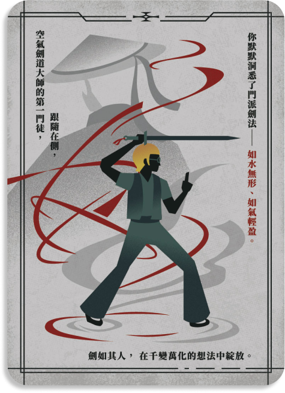
エア剣道の達人の一番弟子として傍に付き従い、あなたはいつしか一門の剣技を悟った。水のように形なく、空気のように軽やかに。剣は人を映し、千の思考の中で開花していく。
追い求め
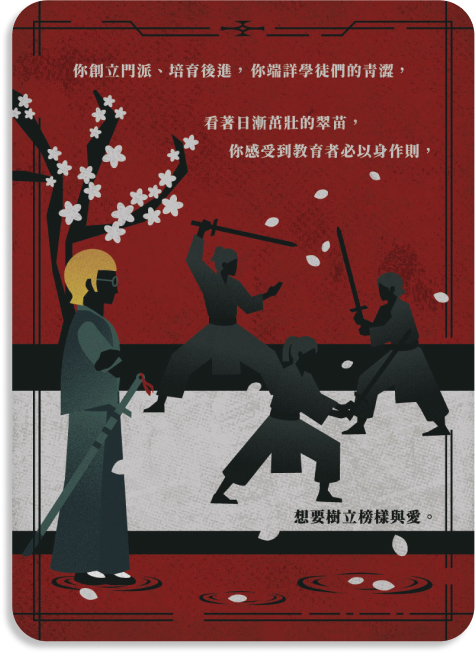
一門を興し、後進を育てる。日々たくましく育つ若芽を見つめながら、教える者として自ら模範となり、愛をもって導くことを心に刻んだ。
旅立ち
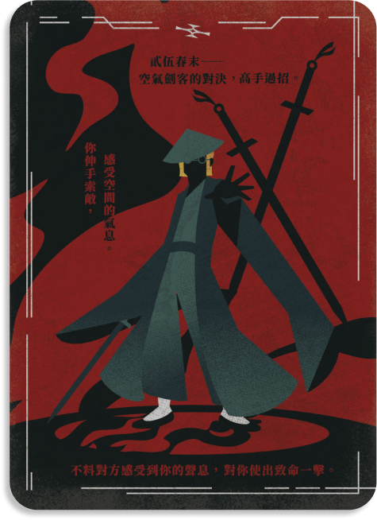
二五年、春、エア剣士たちの決闘。手を伸ばして敵を探りながら空間の気配を読む。しかし相手にその息遣いを悟られ、必殺の一撃を受けてしまった。
始まり
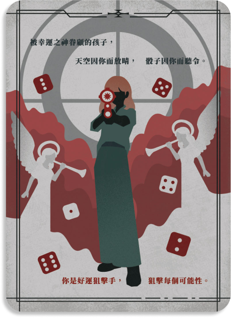
幸運の神に愛された子。空はあなたのために晴れ、サイコロさえもあなたに従う。あなたは幸運の狙撃手、あらゆる可能性を狙い撃つ。
追い求め
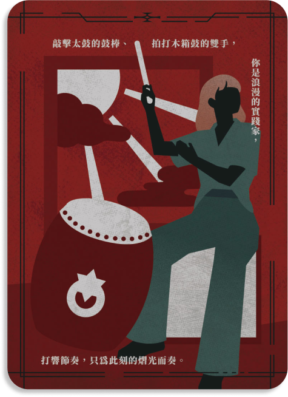
太鼓を打つバチ、カホンを叩く両手。ロマンチックな実践家がリズムを響かせ、ただこの瞬間の輝きのために奏でる。
旅立ち
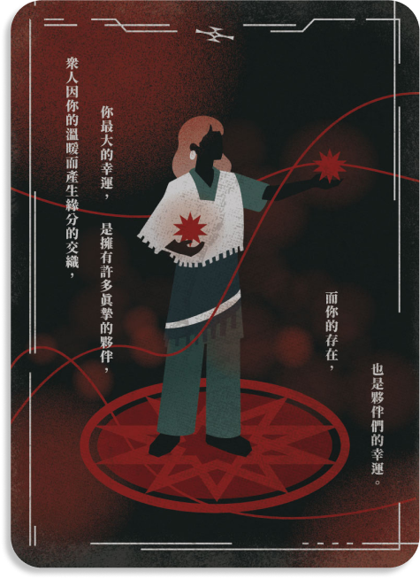
その温もりが人々の縁を結んでいく。あなたにとって一番の幸運は、心からの仲間にたくさん恵まれたこと。そしてあなたの存在もまた、仲間たちにとっての幸運なのだ。
始まり
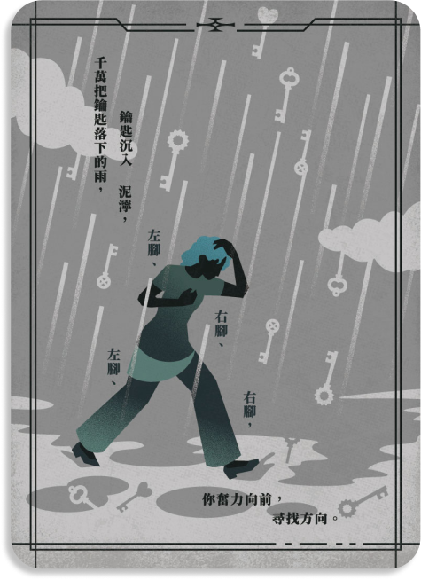
数え切れない鍵の雨が降り注ぎ、泥の中へ沈んでいく。左、右、左、右。あなたは懸命に前へ進み、行くべき道はまだ未明。
追い求め
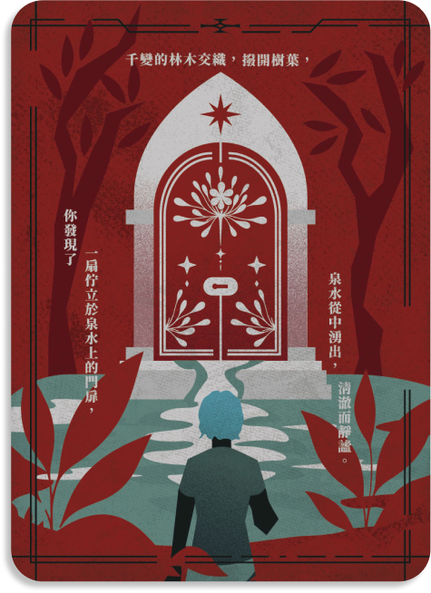
重なり合う木々をかき分け、葉の向こうに、泉の上に佇む扉を見つけた。その奥から湧き出す水は、澄みきって静謐だった。
旅立ち
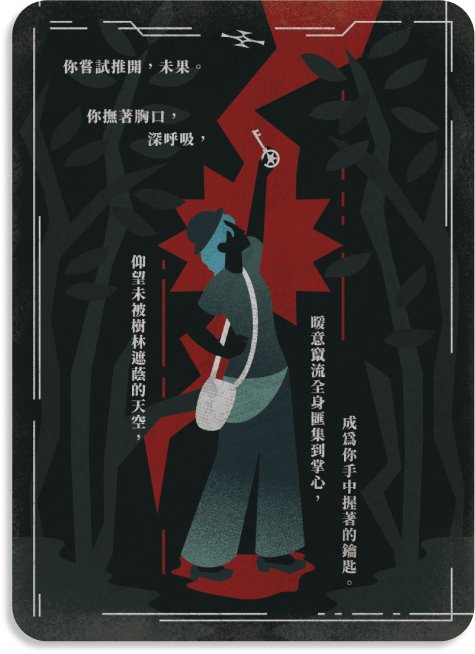
扉を押し開こうとするが、開かない。胸に手を当て深く息を吸い、木々に伸ばされていない空を仰ぐ。温もりが全身を駆け巡り、掌へと集まり、やがて鍵となった。
始まり
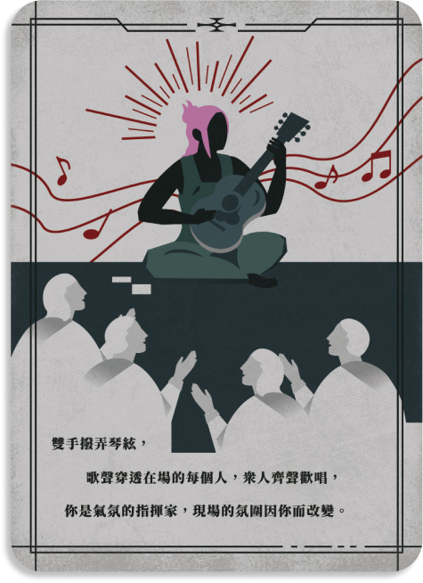
両手で弦を奏で、歌声は人々に届く。皆がその声を合わせながら歌い、あなたは指揮者。空気を操って変えていく。
追い求め
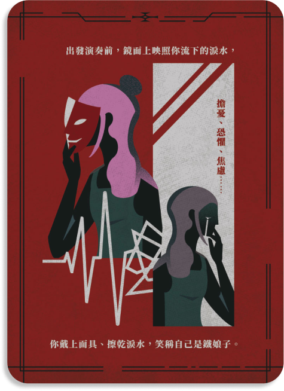
ステージに立つ前、鏡には涙を流すあなたが映る。不安、恐れ、焦り。仮面をかぶり、涙を拭い、自分を「鉄の女」と。
旅立ち
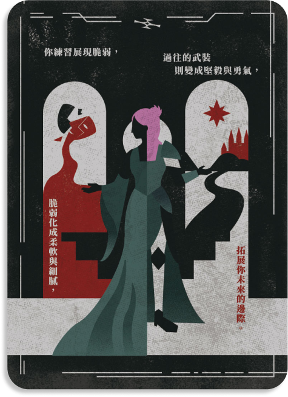
だんだん、自分の弱さを見せつつ。弱さは優しさと繊細さへ、かつての武装は強さと勇気へと変わり、未来の可能性を広げていく。
始まり
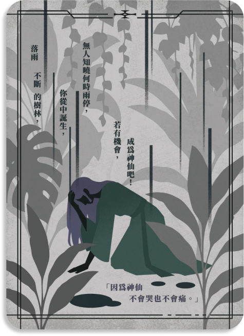
雨の降り続く森で、あなたは生まれた。いつ雨が止むのか、誰にもわからない。願いが叶うなら、仙人になろう。「それで、泣くことも、痛むこともないから。」
追い求め
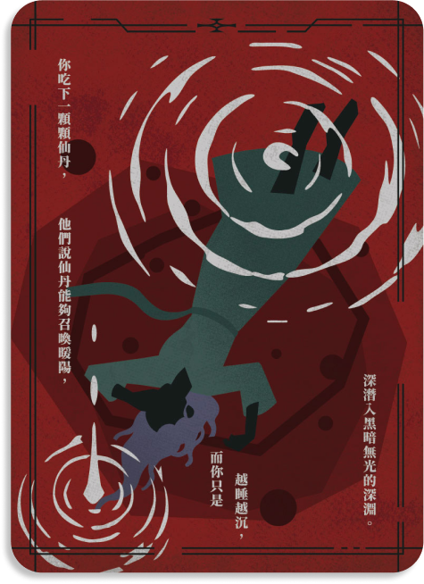
一粒、また一粒と、霊薬を飲み込む。そうしたら暖かな陽を呼べるという。されどただ深い眠りへ沈み、光の届かない暗い深淵へ潜っていく。
旅立ち
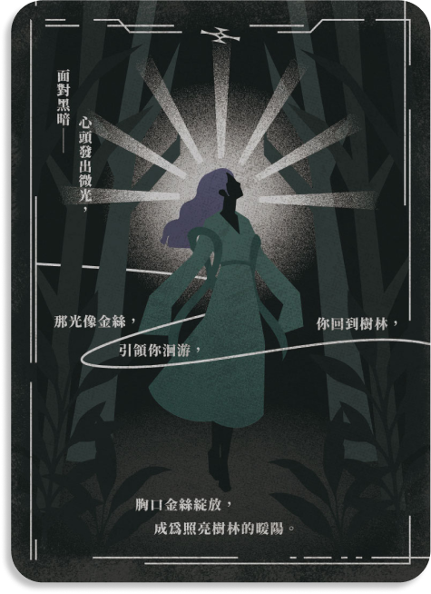
闇の中、胸に微かな光が灯る。その光は金の糸となってあなたを導き、森へと連れ戻す。胸元の金糸はやがて花開き、森を照らす暖かな陽となった。
始まり
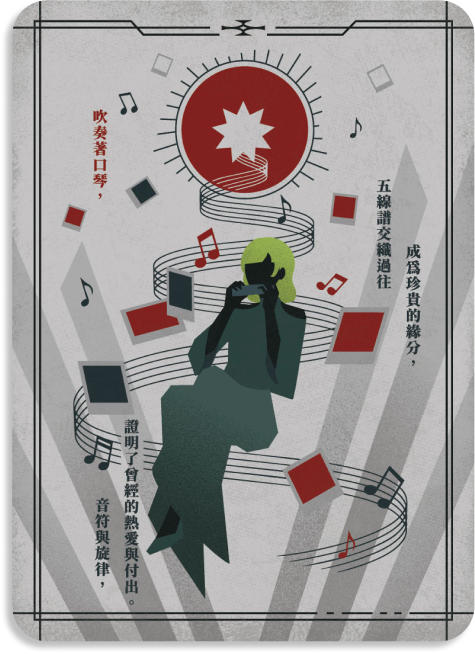
ハーモニカを奏で、五線譜は過ぎた日々を紡ぎ、大切な絆となる。音符と旋律は、かつての情熱と積み重ねてきた努力の証に。
追い求め
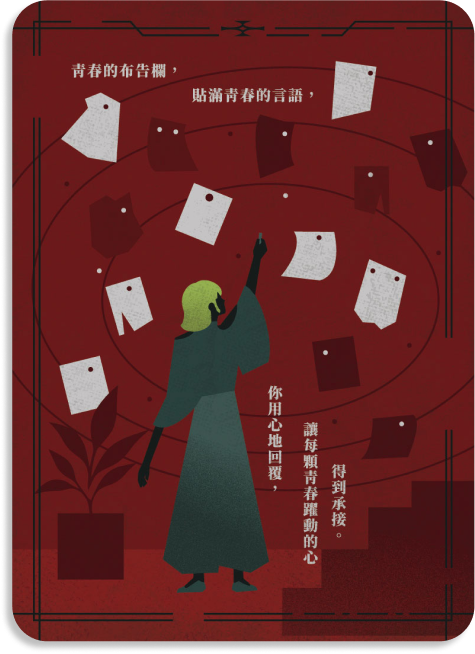
青春の言葉が、青春の掲示板にいっぱい貼られている。あなたは一つひとつ心を込めて応え、揺れ動く者たちの心を受け止めていく。
旅立ち
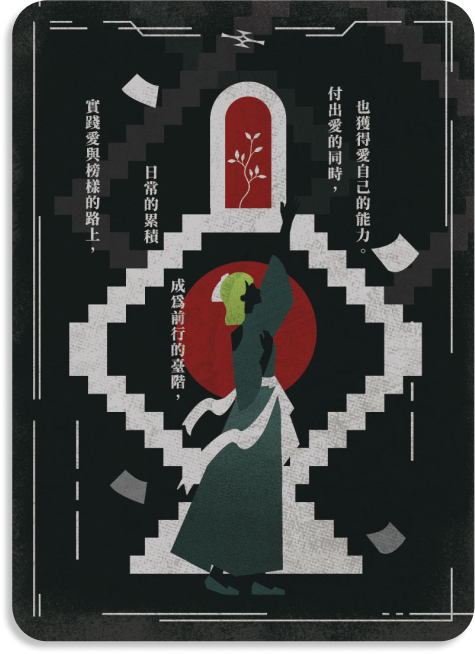
愛と模範を実践する道は途中、日々の積み重ねが前へ進むための階段となる。愛を注ぎながら、少しずつ自分自身を愛する力も身につけていく。
始まり
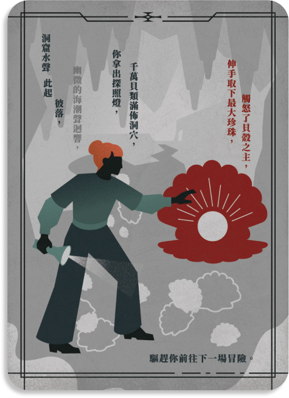
洞窟に水滴の音が響き、こだまするかすかな潮騒。探照灯を照らすと、無数の貝が埋め尽くしている。一番大きい真珠を手に取るが、貝の主の怒りを買い、次なる冒険へと追い立てられる。
追い求め
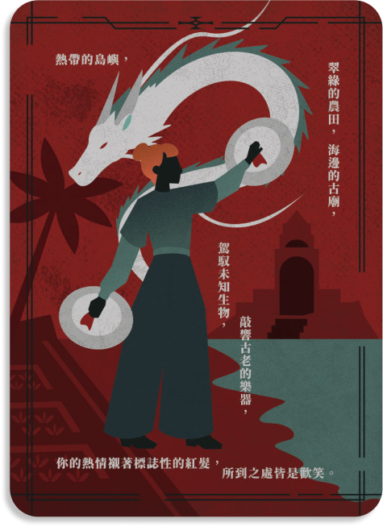
南国の島、海辺の古寺、青々とした田畑。未知の生き物を乗りこなし、古き楽器も打ち鳴らす。情熱を映す鮮やかな赤髪とともに、行く先に笑いがあふれる。
旅立ち
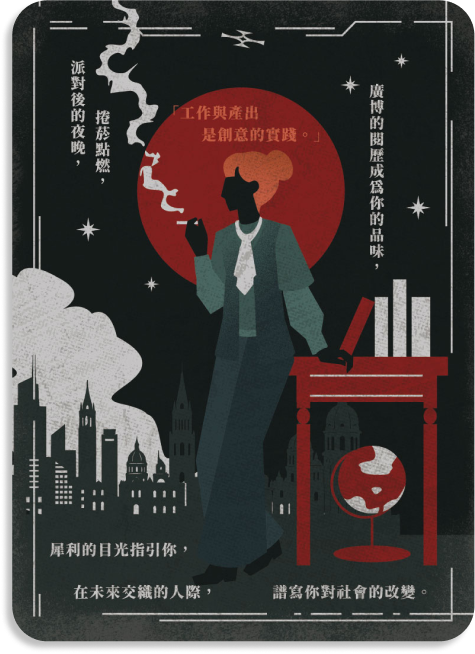
後夜祭、巻き煙草に火を灯す。「仕事とアウトプットは、創造性の実践だ。」幅広い経験は力となり、鋭い眼差しに導かれながら、未来で人との縁を紡ぎ、社会を変えるのを描いていく。
始まり
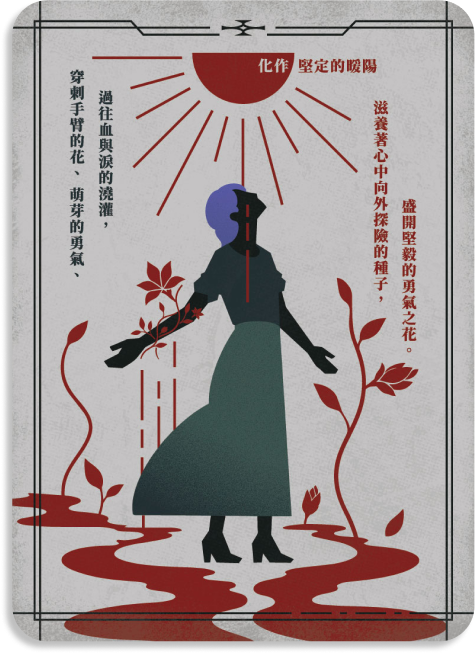
腕を貫く花、芽生える勇気。かつての血と涙は陽となり、外の世界へ踏み出す種を育て、やがて強くしなやかな勇気の花を咲かせる。
追い求め
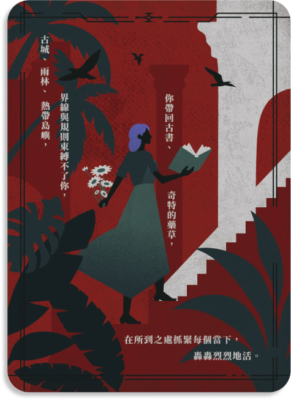
古城、熱帯雨林、南国の島。境界もルールもあなたを縛れない。古書や不思議な薬草を持ち戻り、行く先々で一瞬一瞬をつかみ、鮮烈に生きていく。
旅立ち
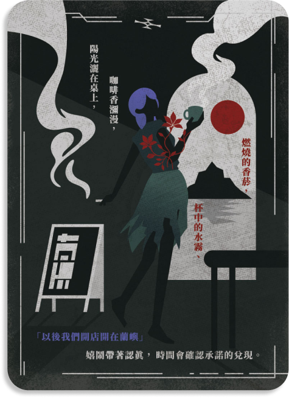
朝の光がテーブルに差し、コーヒーの香りが漂う。カップから立つ湯気、燃える煙草。「いつか蘭嶼で店を開こう。」ふざけながら本音でもある。その答えは、いつか時が証明してくれる。
始まり
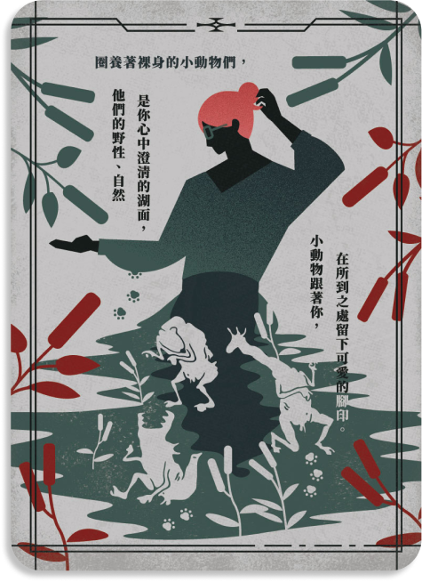
裸の小動物たちを飼い、その野性と自然な姿は、自分の心に広がる澄んだ湖のよう。動物たちはあなたについてゆき、愛らしい足跡を残す。
追い求め
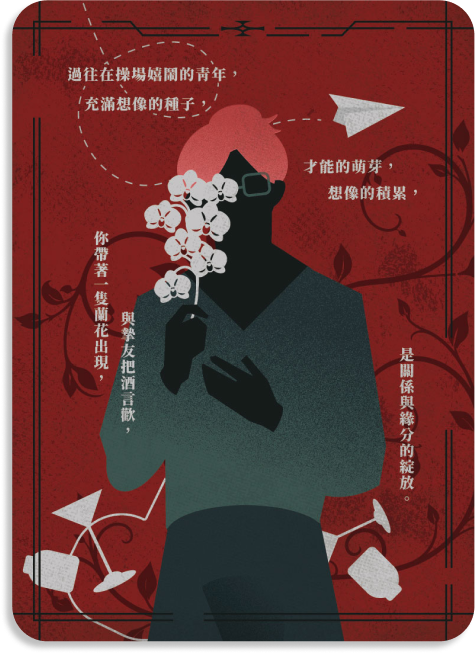
かつて校庭ではしゃいだ青年、想像力で満ちた種。芽生え才能、積み重なる感性。あなたが現れ、手に蘭一輪を、親友と酒を酌み交わす。それは縁が開花する瞬間。
旅立ち
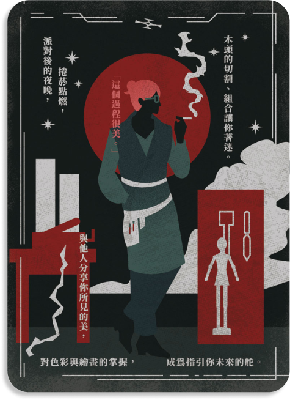
後夜祭、巻き煙草に火を灯す。「この過程が美しい。」木を切り、組み合わせることに魅了され、美しさを人と分かち合う。色と絵を操る力は、未来へ進む舵となる。
始まり
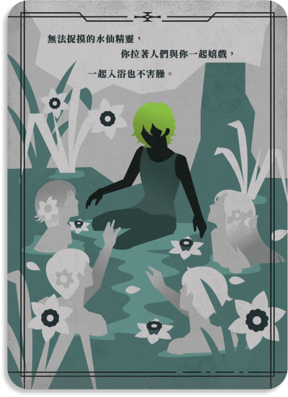
つかみどころのない水仙の精霊。一緒にはしゃぎと、あなたは人の手を引き、共に湯に浸かることさえ恥ずかしがらない。
追い求め
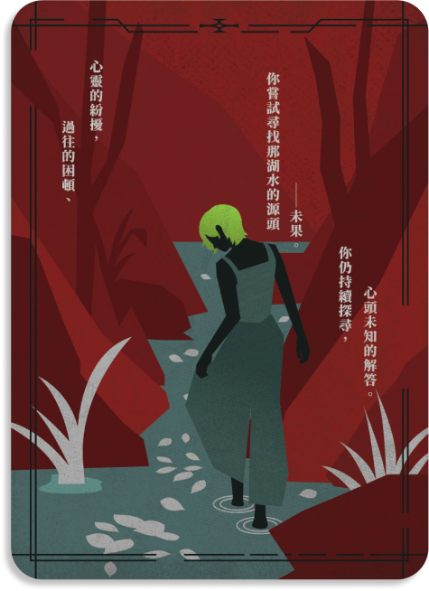
かつての苦境、心のざわめき。あなたは湖の源を探したが、まだ見つからない。それでも探し続ける、心に残る未知の答えを。
旅立ち
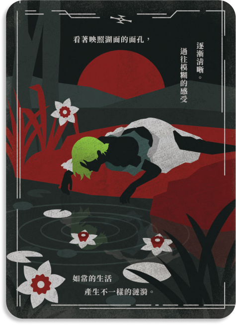
湖面に映る自分の顔を見つめる。かつて曖昧だった感情は少しずつ輪郭を帯び、変わらない日常にも、新たな波紋が広がっていく。
始まり
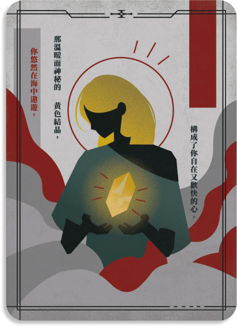
海を悠々と泳ぐ。神秘的な黄色い結晶が温かく、自由で朗らかなあなたの、心を形づくっている。
追い求め
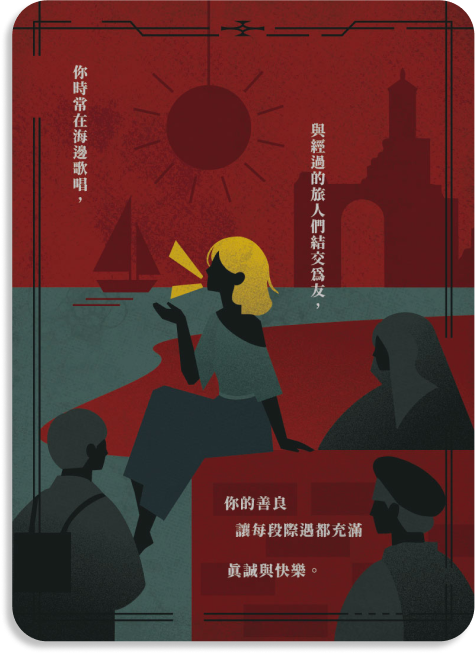
あなたはよく海辺で歌い、行き交う旅人たちと友になる。その優しさが、一つひとつの出会いを真心と喜びで満たしていく。
旅立ち
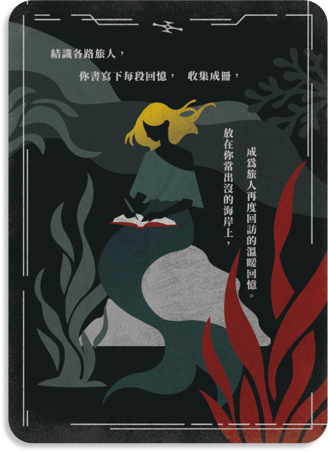
さまざまな旅人と出会い、その思い出を記し、一冊に綴じていく。それをいつもの海辺に残し、再び訪れる旅人たちを迎える温かな思い出となる。
始まり
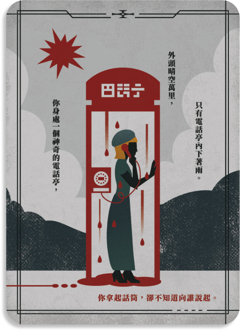
いるのは、不思議な電話ボックスの中に。外は雲ひとつない青空なのに、中だけは雨が降っている。受話器を取るものの、誰に話せばいいのかわからない。
追い求め
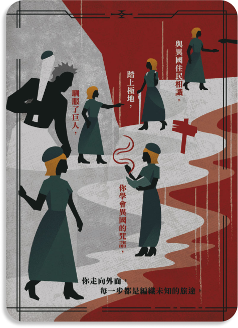
外へ踏み出す。一歩一歩、未知の旅が紡がれていく。異境の呪文を学び、巨人を手なずけ、極地へ赴き、異国の人々と出会うことになった。
旅立ち
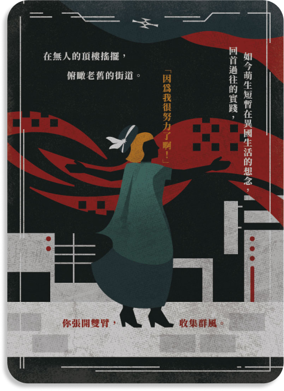
人のない屋上で揺られながら、古びた街並みを見下ろす。「だって、私すごく頑張ったから！」これまでの歩みを振り返り、異国で暮らしてみる未来を思い描く。風を集めるため、あなたは両腕を広げた。
始まり
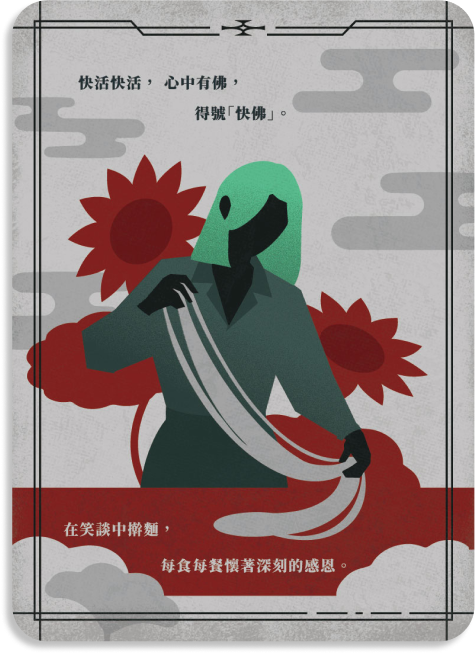
快活、快活。心に仏を宿し、名を「快仏」と授かる。笑い語らいながら麺を打ち、一食一食に深い感謝を。
追い求め
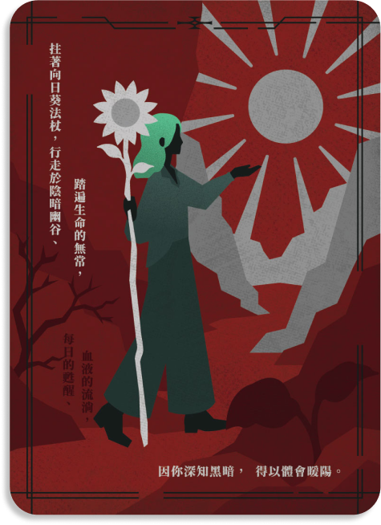
ひまわりの杖をつき、暗い谷を歩み、命の無常を越えていく。日々目覚めるのも、血が流れるのも、闇を知るからこそ、陽だまりの温かさを知る。
旅立ち
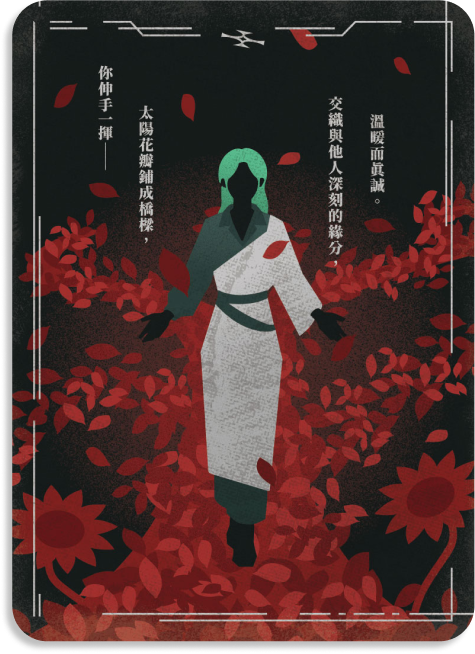
手をひと振りすると、ひまわりの花びらが橋を架ける。人と深く心を交わす縁を紡ぎ、温かく、真摯につながっていく。
始まり
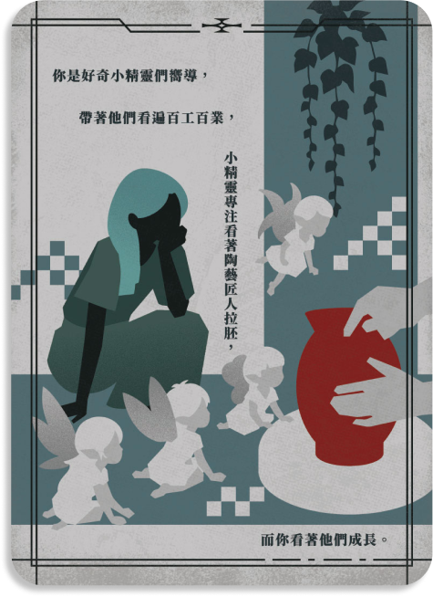
好奇心いっぱいの小さな精霊たちの案内人。さまざまな仕事の世界へ連れ出し、精霊たちが陶芸職人のろくろに夢中になる姿を見ながら、あなたはその成長を見守る。
追い求め
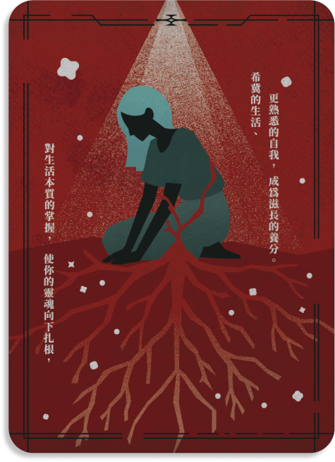
生活の本質を見抜くことで、あなたの魂は深く根を張っていく。望んでいる姿、より深く知った自分自身が、成長の糧となる。
旅立ち
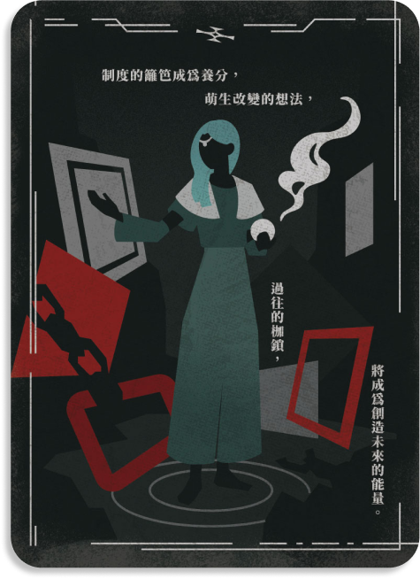
制度という垣根さえも糧となり、変える心が芽生えていく。かつての枷は、やがて未来を創り出す力となる。
始まり
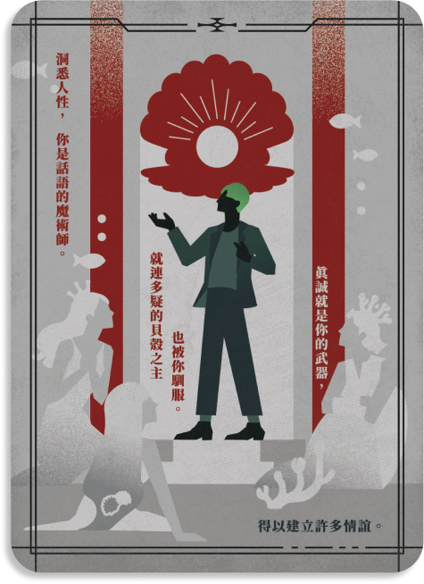
人の心を見抜く、言葉の魔術師。疑り深い貝の主さえも手なずけ、誠実さを武器に、たくさんの絆を築いていく。
追い求め
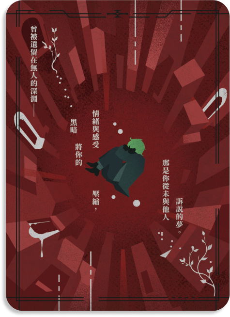
かつて誰もいない深淵に取り残され、闇に感情と思いを押し込められていった。それは、誰にも語ったことのない、あなたが見た夢。
旅立ち
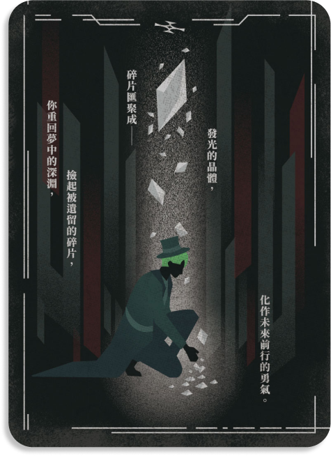
再び夢で見た深淵へ潜り、残された欠片を拾い集めた。欠片は光る結晶となり、未来へ進むための勇気へと変わっていく。
始まり
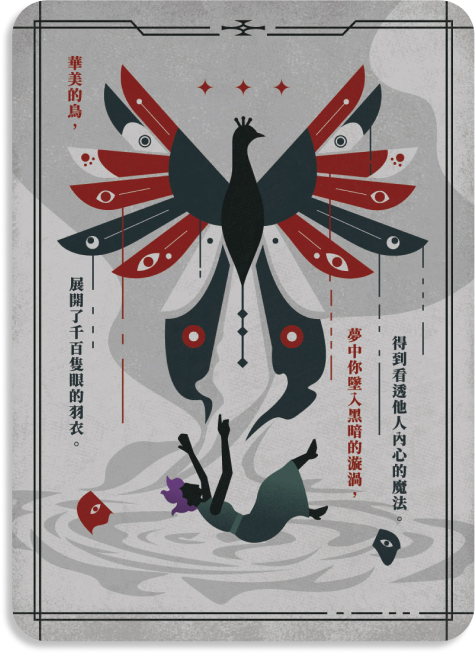
華麗な鳥は、幾百もの瞳を宿す羽衣を広げる。夢の中、あなたは闇の渦へと落ち、人の心を見通す魔法をもらった。
追い求め
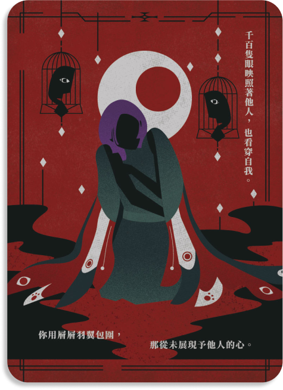
幾百もの瞳は他者を映し、自分自身をも見透かす。あなたは幾重もの翼で包み込む、誰にも見せたことのない心を。
旅立ち
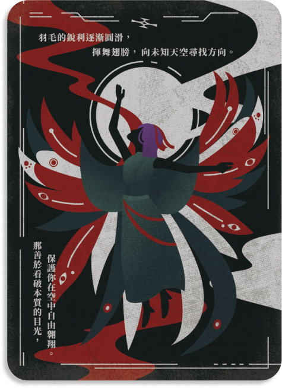
鋭かった羽は少しずつ丸みを帯びていく。翼を広げながら未知へ進む道を探す。本質を見抜くその眼差しが、自由に空を翔けるあなたを守っていく。
始まり
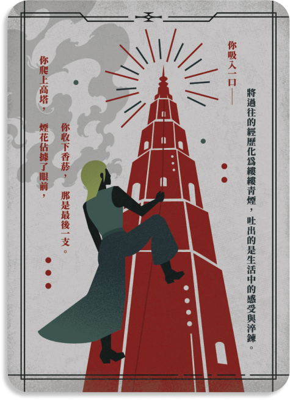
塔を登ると、煙の花が目の前を広がった。煙草を一本受け取り、ひと口を吸った。これまでの経験は細い煙となり、吐き出すのには、日常の感情と積み重ねが宿る。
追い求め
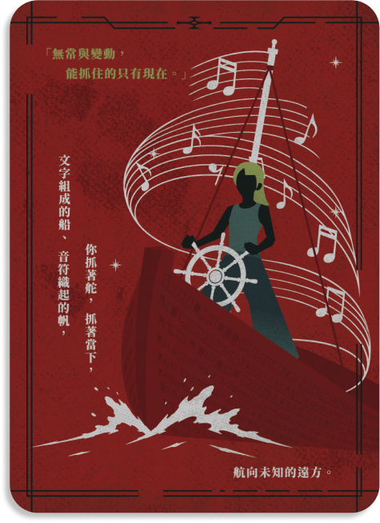
「無常と変化の中、つかめるのは今だけ。」言葉でできた船、音符で織られた帆。舵を握り、今この瞬間をつかみ、未知の彼方へ向かう。
旅立ち
草原に寝転んで、目の前の子羊たちを眺める。いつものように慣れた手つきで導いている日々、時に騒ぐ子羊たちに腹を立てつつも、思わず笑ってしまう。
始まり
ウクレレを背負い、繊細で優しい思いを奏でる吟遊詩人。夜空高く輝くシリウスをたどり、一つひとつの幸せな瞬間を集めていく。
追い求め
筆巻きを開き、足元に広がる銀河を描く。星々を踏みしめ、行く先の輝きを捉えながら、誰かを照らす星明かりとなる。
旅立ち
一片、また一片と、楽しい思い出のパズルを組み上げていく。一枚一枚の景色は、やがて未来を描くための七色の絵の具となる。
始まり

花びらを広げ、朝日を浴びる。あなたが咲くその頂に、たどり着く者はほとんどいない。誰も見ぬ景色を望み、さらなる高みへ。
追い求め

ある日、ウイッチと出会った。元の姿とひきかえ、身体と、遠くへ旅するための脚を手に入れた。
旅立ち

遠くを追い求めながら、元の自分を取り戻していく。心に安らぎを見つけたとき、旅はようやく終わりを迎える。
始まり
「酒をあげ、今夜はとことん飲もう！」色鮮やかな夜に楽しい空気がどんどん広がってる。笑い声が響き、グラスが賑やかに交わされる。
追い求め
未来の選択肢は迷宮のよう。その中で迷い、立ち止まりながらも、何度も挑戦し、壁を越えるうちに、少しずつ前へ進むリズムをつかんでいく。
旅立ち
開かれた心は羅針盤、慎重さは守る傘。大海原に、渦に出会っても、あなたを穏やかに前へと進ませてくれる。
始まり
そよ風に包まれ、煙草の余韻が漂う。行き交う旅人たちに囲まれながら、ざわめく魔境の力も感じる。
追い求め
青梅、砂糖、酒――幾度となく錬金の大釜に火を入れる。ただ、魔境に残るわずかな魔力をつかむために。
旅立ち
扉を閉じ、これで普通な日々に戻るのだと思った。されど、「魔境」などただの幻。魔力はいつだって、あなたの遊び心から生まれていた。
LET'S SEE MORE!